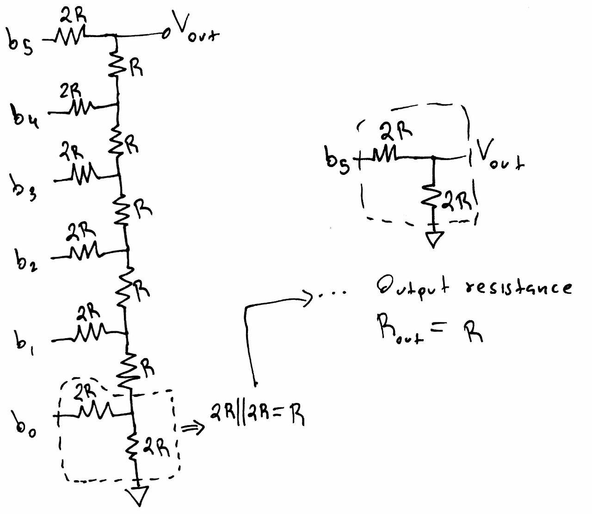

| wget http://cmosedu.com/jbaker/labs/ee421L/lab2/lab2.zip unzip lab2.zip mv lab2 ../CMOSedu |

| Figure 6 |
|  |
| Figure 7:
By recursively transforming each parallel combination of resistors into
their equivalent resistance, we can see that we ultimately obtain an
output resistance of R, despite how large the DAC may be. Each parallel
combination results in the sum of the series yielding another pair of
of parallel 2R resistors. |
| Figure 8 |
|
| Figure 9 |
| Ideal |
My Design |